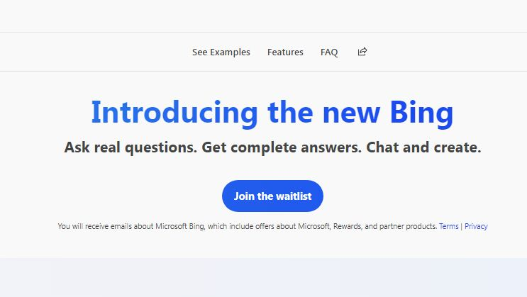
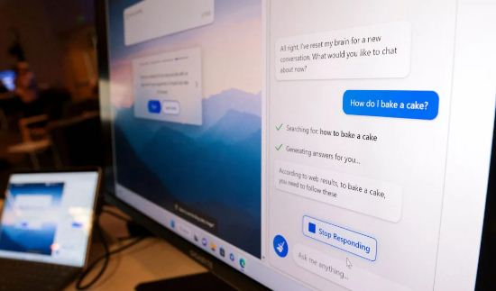
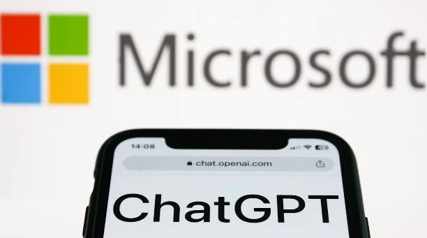
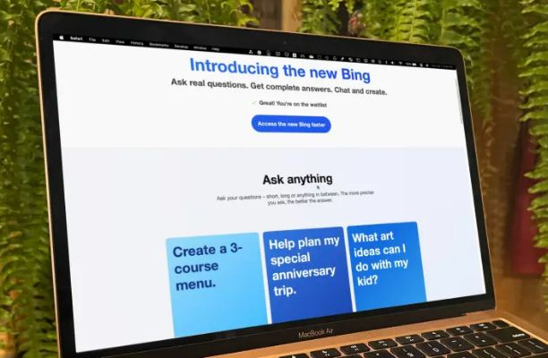
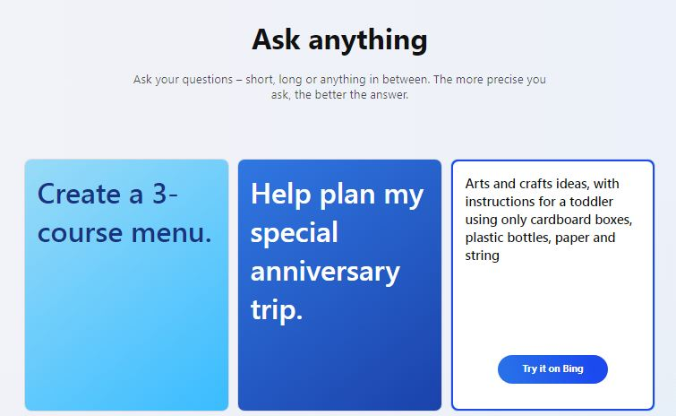
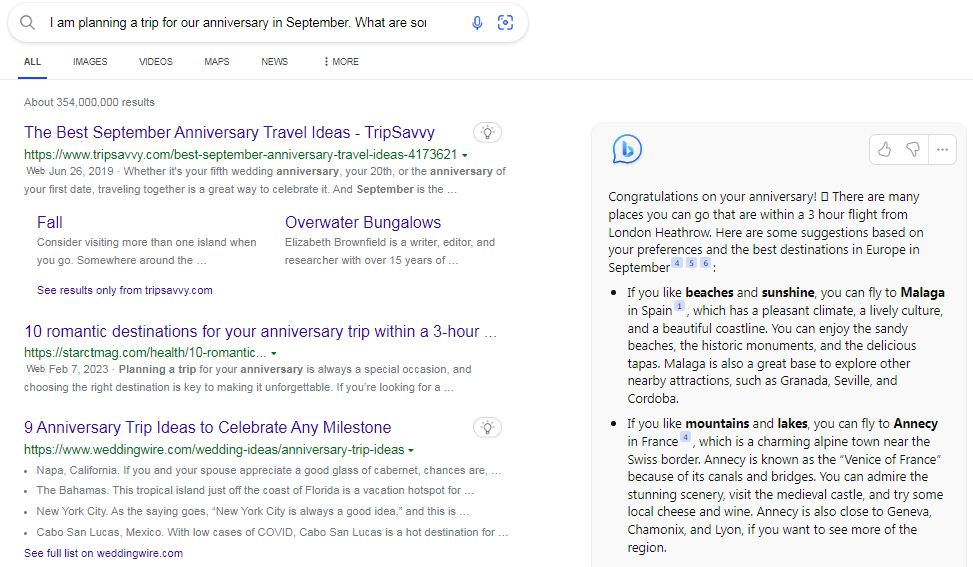

Microsoft's Bing AI: Waitlist Over? | How To Get In?
Hold onto your hats, folks - Microsoft is back with a vengeance, and this time it's all about Bing AI. With over 100 million users now on ChatGPT's board, Microsoft's latest search engine is equipped with pioneering artificial intelligence technology that is set to take the online search experience to new heights. Whether you're a die-hard fan of Bing or a newcomer to the search engine game, Bing AI is sure to offer a search experience like no other.
Get ready to have all your tech related queries answered in no time! If you're one of the many curious users eager to get your hands on Microsoft's groundbreaking new search engine, then this is the article for you. We've gathered all the answers to your FAQs about Bing AI and its waitlist so you can learn how to get in and experience the future of search technology for yourself. Get ready to get in the know and take the next step in your new way of online search experience.
Table of Content
- Introductory Part
- Microsoft Bing AI: The Future of Search Tech
- Microsoft and ChatGPT Integration Leads Bing AI
- How to join the Bing AI waitlist?
- How long is the Bing AI waitlist?
- Where's ChatGPT Competitor Google's Bard AI?
ChatGPT and Copyright: What You Need To Know
Learn More: Click
Here→
Microsoft Bing AI: The Future of Search Tech
Since its launch in 2009, Bing has become a household name as a search engine that provides quick and accurate search results. But now, Bing is stepping up its game with the introduction of Bing AI - a new technology that's taking online search to the next level.
With the integration of artificial intelligence (AI) technology, Bing AI has become a powerful and innovative search engine that provides more accurate, personalized, and intuitive search results. This technology uses machine learning algorithms to analyze user behavior, search history, and other relevant data to deliver search results tailored to individual preferences.
Is ChatGPT Generated Content Copyright Free or Not?
Learn More→
Bing AI is not just about personalized search results, it also incorporates other advanced features such as natural language processing (NLP), which makes it possible for users to interact with Bing in a more conversational and intuitive way. This allows users to ask Bing questions using natural language and receive relevant and accurate answers in return.
Bing AI also offers an "intelligent answer" feature, which allows users to get quick and direct answers to their questions without having to click through to a website. The intelligent answer feature utilizes AI to analyze the meaning behind the question and provides a direct and relevant answer.
Overall, Bing AI represents a significant advancement in search technology that has the potential to transform the online search experience. With its advanced features, personalization, and intuitive user experience, Bing AI is quickly becoming a go-to search engine for users who value efficiency, accuracy, and convenience.
Microsoft and ChatGPT Integration Leads Bing AI
Microsoft's Edge browser and Bing search engine have undergone a revolutionary upgrade with the integration of advanced AI technology, which is powered by the same technology that OpenAI used to create ChatGPT. You can now sign up to experience the new AI featured Bing that has the potential to revolutionize your searching experience.
How to join the Bing AI waitlist?
To join the Bing AI Waitlist, Head over to www.bing.com/new and click on "Join waitlist" to sign up for the ChatGPT Bing waitlist. All you need is your email address, and Microsoft will notify you as soon as the new search engine is available to you. The first list of Bing invites have already been already occupied by thousands of users, so sign up now for a good chance of being one of the next lucky users to experience the Bing AI!
Don't have time to wait ? Okay, here's another easy option especially for you Click Here→
You can actually test it out right now! Simply head to Bing and click on the Chat tab at the top of the page. Scroll down to the "Ask anything" section, where you'll find a selection of preset prompts for you to try out before you gain access to the full version.
Click on any of the blue boxes to select a sample question or task, and watch as the advanced AI technology behind Bing AI works its magic. For example, if you choose "Write a rhyming poem," the new Bing AI will generate a poem for a child who loves dogs and the ocean. It's a fun and fascinating way to get a taste of search technology that is revolutionizing the way we search the web.
How long is the Bing AI waitlist?
The waitlist period for the Bing AI can vary and is dependent on a number of factors,
such as the number of people on the waitlist and the availability of resources.
Microsoft has not given a specific timeframe for how long it will take to gain access
to the new Bing AI after joining the waitlist. However, the first wave of ChatGPT Bing
invites have already been sent out, so if you sign up now, you have a good chance of
getting access soon. Microsoft will notify you as soon as the new search engine is
available to you, so keep an eye on your email inbox for updates.
Is ChatGPT Copyright Free? Learn More
Where's ChatGPT Competitor Google's Bard AI?

In a recent announcement, Google introduced its latest AI language model, Bard, with the ambitious aim of surpassing the current industry leader, ChatGPT. This groundbreaking move has generated a flurry of interest and speculation about the potential impact of AI and its transformative effects on various industries.
In August 2021, Google Research and the University of California, Berkeley jointly unveiled Bard, a new AI language model. Bard is a large-scale generative language model that has been developed to produce natural language text that is both diverse and creative. Google claims that Bard is capable of generating text that is more human-like and varied compared to other language models currently available Read More→
Who Owns Content Generated By ChatGPT AI?
Learn More: Click Here→